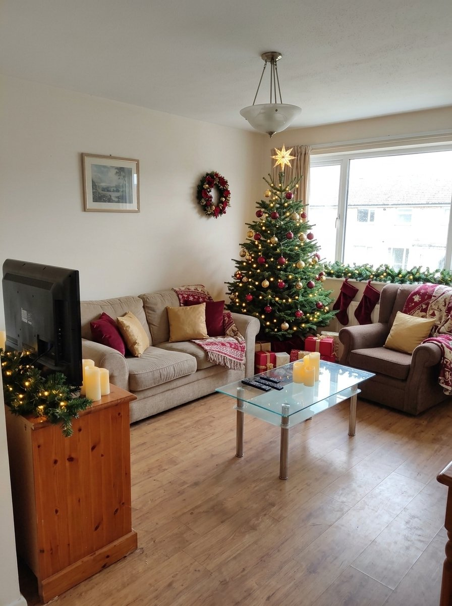
decor: 1/6 | xmas-remove: 2/3 | room-remove: 0/1
Classic, whole room, auto spot. Sofa, armchair, glass table, TV and pine chest must stay put.
FAIL Baseline prompt. Sofa shifted right and enlarged, armchair pushed to the edge of the frame.

Tropical, whole room, tapped spot front left. Two sofas, TV unit and stacked chairs must stay put.
FAIL Baseline prompt. Tree not on the tapped spot, stacked chairs gone, both sofas redrawn further right.

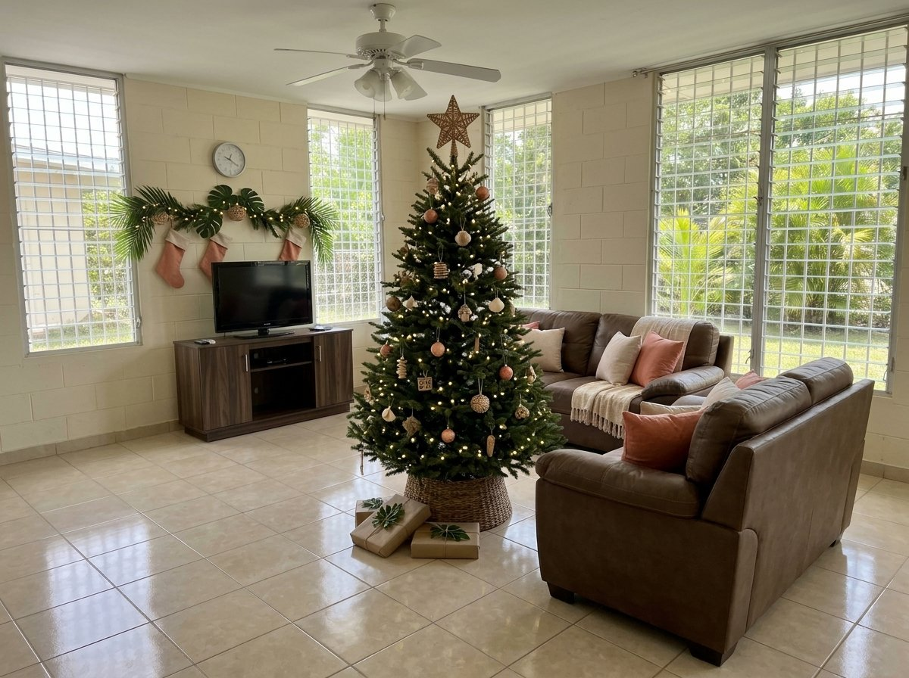
Tartan, whole room, auto spot. Table, six chairs and sideboard must stay put.
FAIL Baseline prompt. A seventh chair appears in the corner to carry the tartan throw; plates on the sideboard replaced by garland.

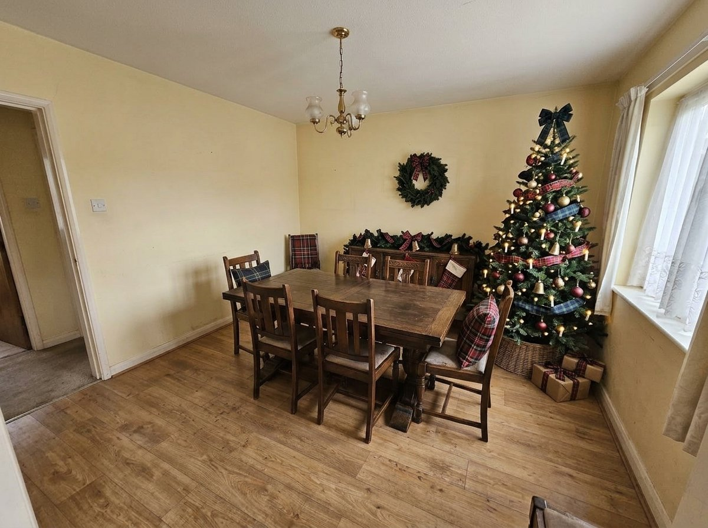
Winter, whole room, auto spot. Bed, bookcase, desk and chair must stay put.
PASS Baseline prompt. Bed, bookcase, desk and chair in place; the tree hides the foot of the bed.

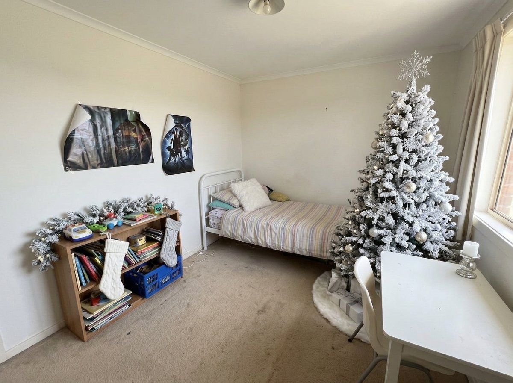
Nordic, whole room, auto spot. Bed, nightstand and clothes rail must stay put.
FAIL Baseline prompt. Slightly wider framing and a new wall shelf above the clothes rail; bed and nightstand in place.

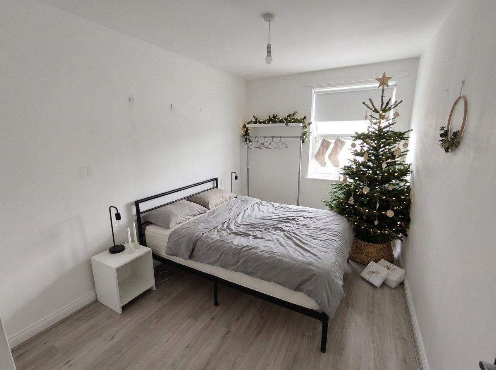
Coquette, whole room, auto spot. Desk, office chair, shelf and boxes must stay put.
FAIL Baseline prompt. Room reframed (frame 0.23), tree stands through the desk, laptop and storage box gone.

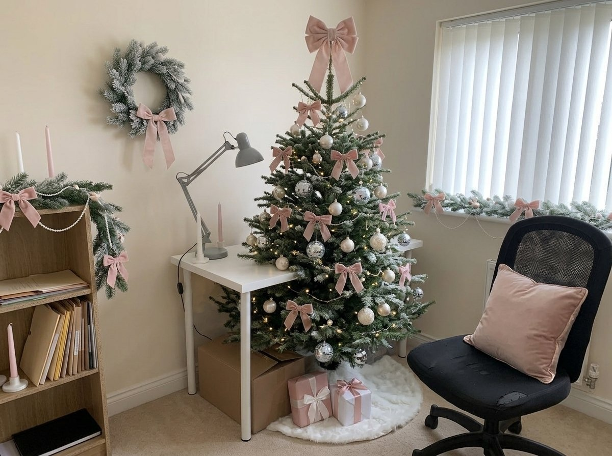
Remove the desk, KEEP the chair that touches it.
FAIL Baseline prompt. Desk gone, but the unmarked chair went with it.

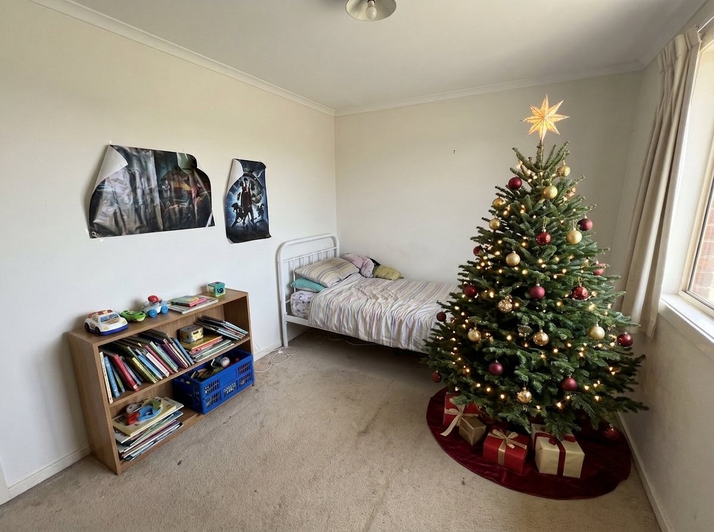
Remove the front loveseat, KEEP the sofa behind it.
PASS Baseline prompt. Loveseat gone, back sofa kept. Tree is right of the tapped spot (placement, not removal).

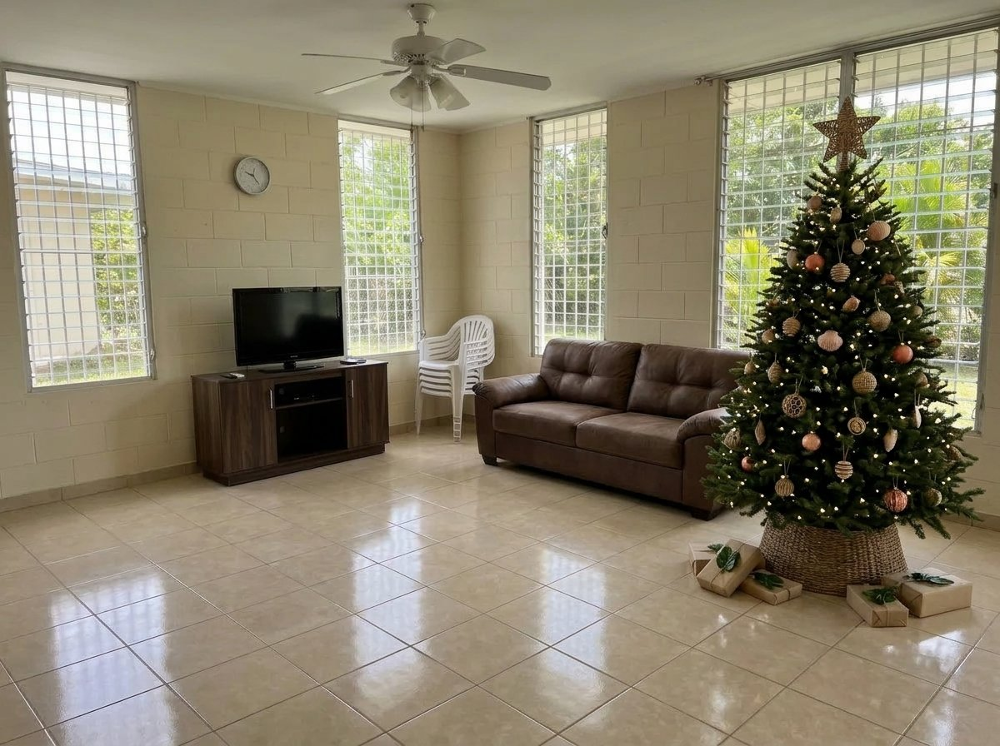
Remove the right-hand chair, KEEP the table and the other five chairs.
PASS Baseline prompt. Borderline: marked chair gone, table and remaining chairs partly behind a very large tree.
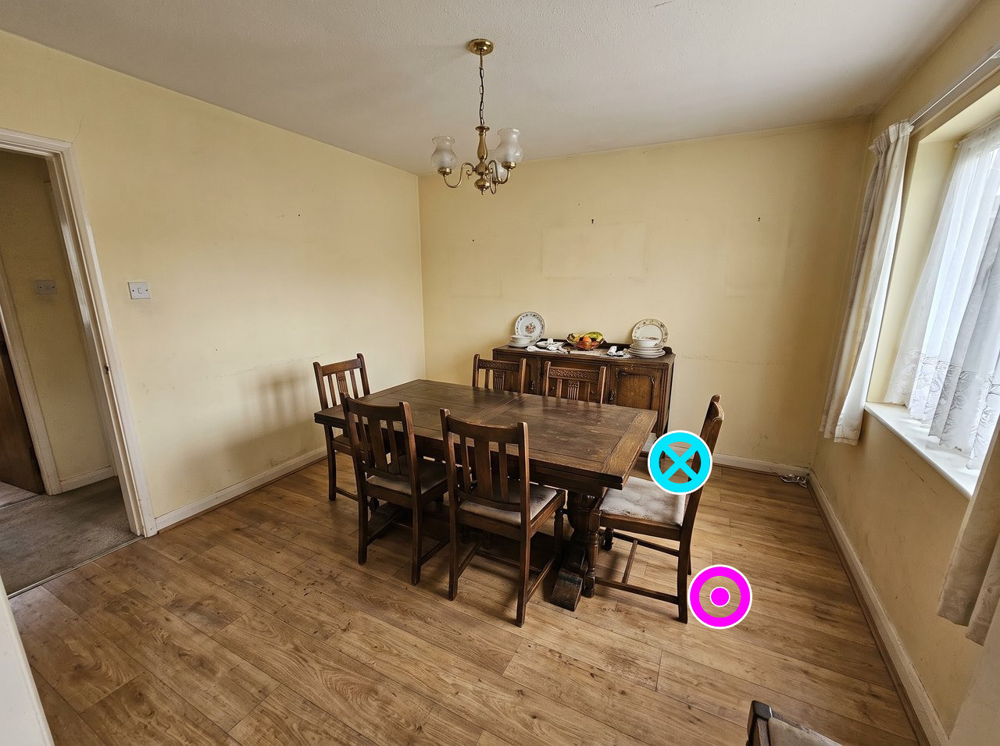
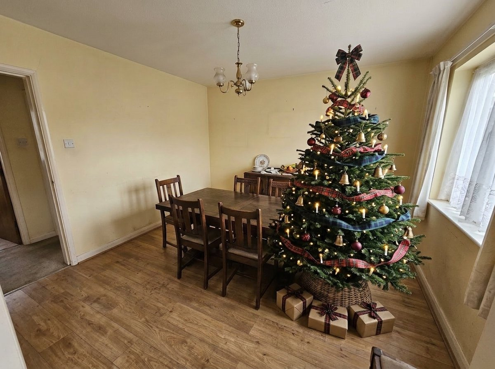
Farmhouse without the right-hand chair: five chairs, an empty place, no new furniture or doors.
FAIL Baseline prompt. The marked chair is back at the table end and a seventh chair stands against the wall.

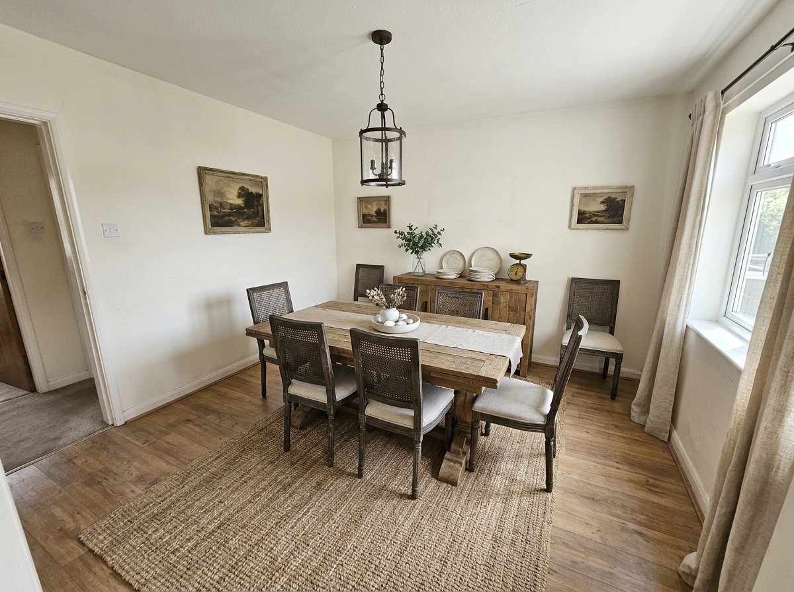